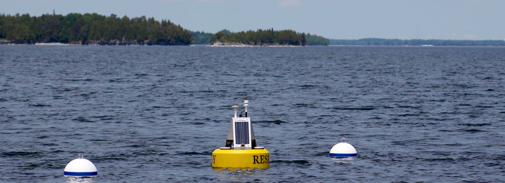

SUNY Plattsburgh Lake Champlain Data Buoys

Photo by Chad Hammer
Our data buoys are supported by the Lake Champlain Sea Grant and the International Joint Commission (via the University of Vermont). You can help us provide more community-shared observations with a tax-deductible donation to our project. Any amount helps! Donate here.
PLEASE NOTE: WE ARE HAVING ISSUES WITH OUR WIND OBSERVATIONS AT THE VALCOUR SITE AND ALL WEATHER OBSERVATIONS AT THE SOUTH MAIN LAKE SITE. WE ARE WORKING TO FIX THE ISSUES
SUNY Plattsburgh currently maintains two data buoys: one southeast of Valcour/Garden Islands and one in the South Main Lake region of Lake Champlain (south of Westport). The buoys collect information on surface weather and lake water temperatures (from the surface to a depth of 50m at Valcour and 14m South Main Lake). Near real time data is provided here for general use, but attribution to SUNY Plattsburgh and our funding agencies is requested for any further distribution. Support for the data buoy comes from NOAA Lake Champlain Sea Grant, the Lake Champlain Research Consortium, and SUNY Plattsburgh (Center for Earth and Environmental Science and Lake Champlain Research Institute).
A discussion of Lake Champlain conditions and forecast can be found on the Burlington National Weather Service Recreation Forecast: HERE
Interested in 2016, 2017, or 2018 data? Contact Eric at: eleib003 [at] plattsburgh.edu


Graphs(last 7 days):
Surface Air Temperature
Wind Speed
Pressure
Water Temperature @ Valcour; S. Main Lake
Water Temperature @ 1m (3.3 ft.); 5m (16.5 ft.); 10m (33 ft.); 25m (82 ft.); 49m (160 ft.)
Solar Radiation
Graphs(all season):
Surface Air Temperature
Wind Speed/Direction
Pressure
Water Temperature @ Valcour; S. Main Lake; Difference
Water Temperature @ 1m (3.3 ft.); 5m (16.5 ft.); 10m (33 ft.); 25m (82 ft.); 49m (160 ft.)
Solar Radiation
For more information, contact Eric Leibensperger: eleib003[at]plattsburgh.edu
Headed out to the Adirondacks? Be sure to check out the conditions in Upper Saranac Lake monitored by our colleagues at Paul Smith's College and the Adirondack Watershed Institute. Graphs/data available: HERE.